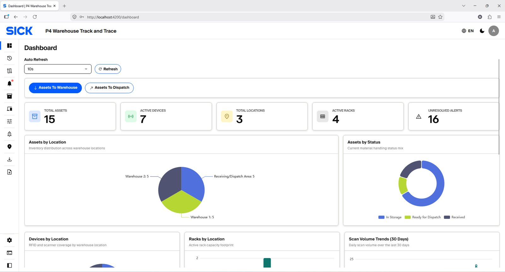
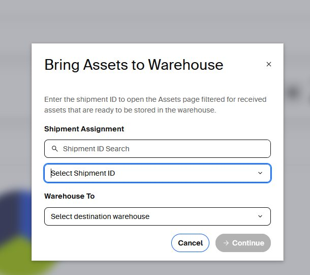
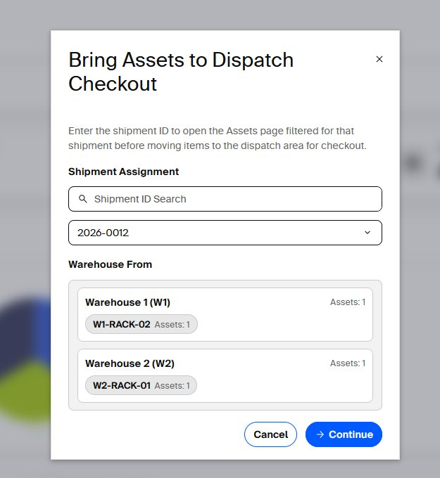
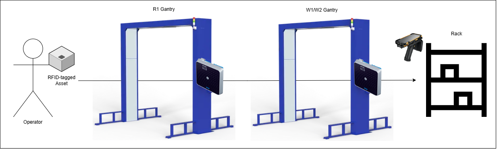
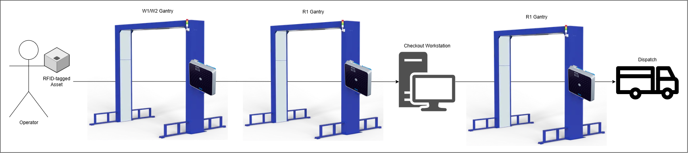

RFID Warehouse Track and Trace
End-to-end operating and configuration guide for administrators, managers, warehouse workers and Viewer users. Use this manual to configure the system, plan movements, store Assets, perform Dispatch Checkout, monitor RFID activity and respond to exceptions.
Admin login
Open the Admin Web application in a supported browser.
Email:
admin@sick.comPassword:
adminThese credentials are the deployment credentials specified for this documentation. If the password is changed, use the current site-approved password.
Default account types
- Admin — configures Assets, Locations, Racks, Devices, RFID rules, Alert rules and Settings, and has full monitoring access.
- Viewer — Performs warehouse Storage and Dispatch operations, monitors operational pages such as Dashboard, Assets, Locations, Devices, Scan Histories, Asset Movements and Alerts without changing configuration.
How the system works
End-user guide for configuring, operating and monitoring RFID Warehouse Track and Trace.

Quick operating sequence
- Configure the site. Apply the approved IP plan, then configure Locations, Racks, Devices, RFID Rules, Alert Rules and Settings. Use SOPAS ET for supported SICK devices; use the device webpage for TDC-X and PicoScan LiDAR.
- Create Assets. Assign Shipment, material and RFID Tag ID; print the tag when required.
- Plan movement. Use Dashboard actions to create Pending Storage or Dispatch movement requests.
- Move and store. Gantries validate route/direction; Handheld Rack Stock Take confirms final Rack storage.
- Checkout. Scan the required eligible subset of the Shipment at the Dispatch workstation.
- Final dispatch. The final Gantry changes eligible Assets from READY_FOR_DISPATCH to DISPATCHED.
- Monitor. Use Asset Movements, Scan Histories and Alerts; respond to real-time Alert popups when needed.


Storage movement workflow
Storage movement sends eligible RFID-tagged Assets from the receiving/dispatch area to the selected Warehouse. Gantries validate passage and direction. At the destination, the Handheld app confirms the Rack and stored Assets.

Dispatch workflow
Dispatch movement sends eligible RFID-tagged Assets from their Warehouse to the dispatch/receiving area. The Dispatch workstation performs Checkout, then the final dispatch Gantry completes the outbound flow.

Important operating rules
- One RFID/business event must contain Assets from one Shipment only.
- Different Shipment flows can run independently and out of order.
- Unregistered EPCs are ignored by the default configuration; the Unknown RFID Tag alert rule is disabled by default.
- Each Dispatch workstation uses its configured RFID reader and supports a single active local Checkout session at a time.
- Partial Checkout is allowed: unscanned eligible Assets of the same Shipment remain for a later Checkout.
- A movement rule's own timeout overrides the global movement fallback timeout.